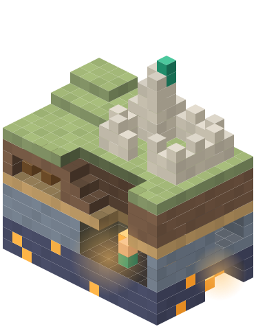

Errantry Renown and Ruin
Dig, build and defend a fortress, block by block, in a huge shared world.

Dig and build with blocks
The ground is blocks all the way down. Dig rooms and halls into the rock, then raise walls and towers from what you dig out.
A world forged before you arrive
Every world is made up front: its geology layer by layer, its rivers and climate, and a history of the people who lived there before you embark.
Play together in one fortress
Friends join the same fortress and dig side by side, in one world big enough for many fortresses at once.